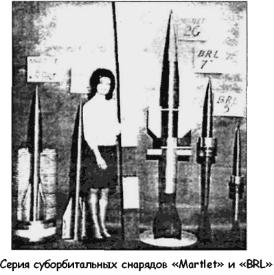
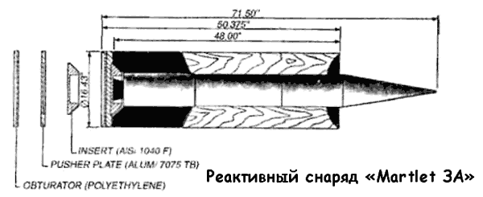
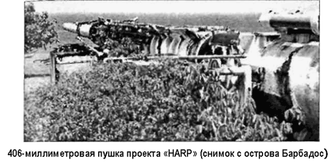

Перспективы «Высотной исследовательской программы» («HARP»)
30 июня 1967 года, в результате резкого «похолодания» в отношениях между США и Канадой, вызванного войной во Вьетнаме, канадский Департамент исследований в области вооружений официально объявил о закрытии «Высотной исследовательской программы».
Проект был свернут в тот самый момент, когда группа под руководством доктора Бюлля работала над созданием самого миниатюрного космического аппарата в истории человечества — реактивного снаряда «Martlet 2G-1» с твердотопливной ступенью. Вес полезной нагрузки, выводимой этим снарядом на орбиту, не превышал 2 килограммов — оптимум для «нано-спутников», разрабатываемых сегодня в НАСА. Сам снаряд при этом был 4,3 метра в длину и 30 сантиметров в диаметре. Общий вес снаряда с выстрелом составлял 500 килограммов.
Среди других, весьма перспективных, направлений программы «HARP» можно назвать работы над сериями реактивных снарядов «Martlet 3» и «Martlet 4». Эти снаряды, имеющие твердотопливных ступени, фактически уже являлись компактными ракетами, начальную часть траектории которых задавала пушка. Наибольший интерес для нас представляет серия «Martlet 4». Поговорим о ней подробнее.
Первоначально программа «HARP» не предусматривала создание орбитальных средств доставки, ориентируясь лишь на задачу изучения верхних слоев атмосферы. Только в 1964 году, когда дополнительное соглашение между канадским Департаментом исследований и правительством США обеспечило гарантированное финансирование программы еще на три года, в группе доктора Бюлля всерьез заговорили об орбитальных запусках. Однако руководство Департамента прохладно отнеслось к этой затее, и до самого закрытия программы энтузиастам орбитальных запусков не удалось «протолкнуть» серию «Martlet 4».

Согласно оставшемуся на бумаге проекту реактивные многоступенчатые снаряды «Martlet 4» можно было использовать для вывода на околоземную орбиту полезных грузов весом от 12 до 24 килограммов. В первой версии проекта снаряды имели две (или три) твердотопливные ступени, в более поздних — ступени с жидким топливом.
Первая ступень типовой модификации снаряда «Martlet 4», содержащая 735 килограммов твердого топлива, имела шесть стабилизаторов. При прохождении через ствол пушки стабилизаторы должны были находиться в сложенном положении, а при выходе — выпрямиться, придавая снаряду движение вращения вокруг продольной оси со скоростью 4,5–5,5 оборотов в секунду — таким образом обеспечивалась гироскопическая устойчивость снаряда на протяжении начального участка полета, заданного выстрелом пушки. Поскольку движение снаряда на этом участке подчинялось законам элементарной баллистики (то есть зависело только от мощности заряда, угла наклона орудия и аэродинамики снаряда), отпадала необходимость в сложной системе управления и контроля. Первая ступень должна была запуститься на высоте 27 километров и выгореть в течении 30 секунд, давая тягу в 6900 килограммов.
Вторая и третья ступени «Martlet 4» также были твердотопливными (181,5 и 72,6 килограмма топлива соответственно) и обеспечивали полет снаряда в стратосфере и мезосфере, выводя полезный груз на высоту до 425 километров.
Между второй и третьей ступенями конструкторы разместили блок управления и ориентации. Он должен был включиться сразу после отделения первой ступени, поддерживая заданные программой углы крена и тангажа. Заметим, что в 60-е годы еще не существовало интегральных схем, а традиционные механические гироскопы не могли быть применены в блоке управления и ориентации, поскольку не выдержали бы чудовищных перегрузок. Для решения этой проблемы к разработке были привлечены специалисты из Университета Макгила и Лаборатории баллистики армии США. В результате была спроектирована совершенно новая система ориентации. Она состояла из аналогового модуля, получающего информацию от нескольких датчиков, закрепленных на корпусе снаряда, и сравнивающего поступающие данные с эталоном. Скорость вращения вокруг продольной оси определялась с помощью акселерометра, угол тангажа — двумя инфракрасными датчиками. Дополнительная информация поступала также от двух светочувствительных элементов, ориентированных по солнцу.
Отдельные компоненты системы управления и ориентации прошли «обкатку» на устойчивость к перегрузкам на испытательном полигоне в Квебеке для их запуска использовалась малая 155-миллиметровая пушка, способная придать контейнеру с элементами системы ускорение более 10 000 g.


Важнейшим преимуществом реактивных снарядов «Martlet 4» перед ракетными транспортными средствами был малый период предполетной подготовки. Конструкторы полагали, что такая подготовка займет всего лишь несколько часов против нескольких недель или даже месяцев для многоступенчатой ракеты-носителя. При необходимости можно было запускать от четырех до шести снарядов «Martlet 4» в день, невзирая на погодные условия.